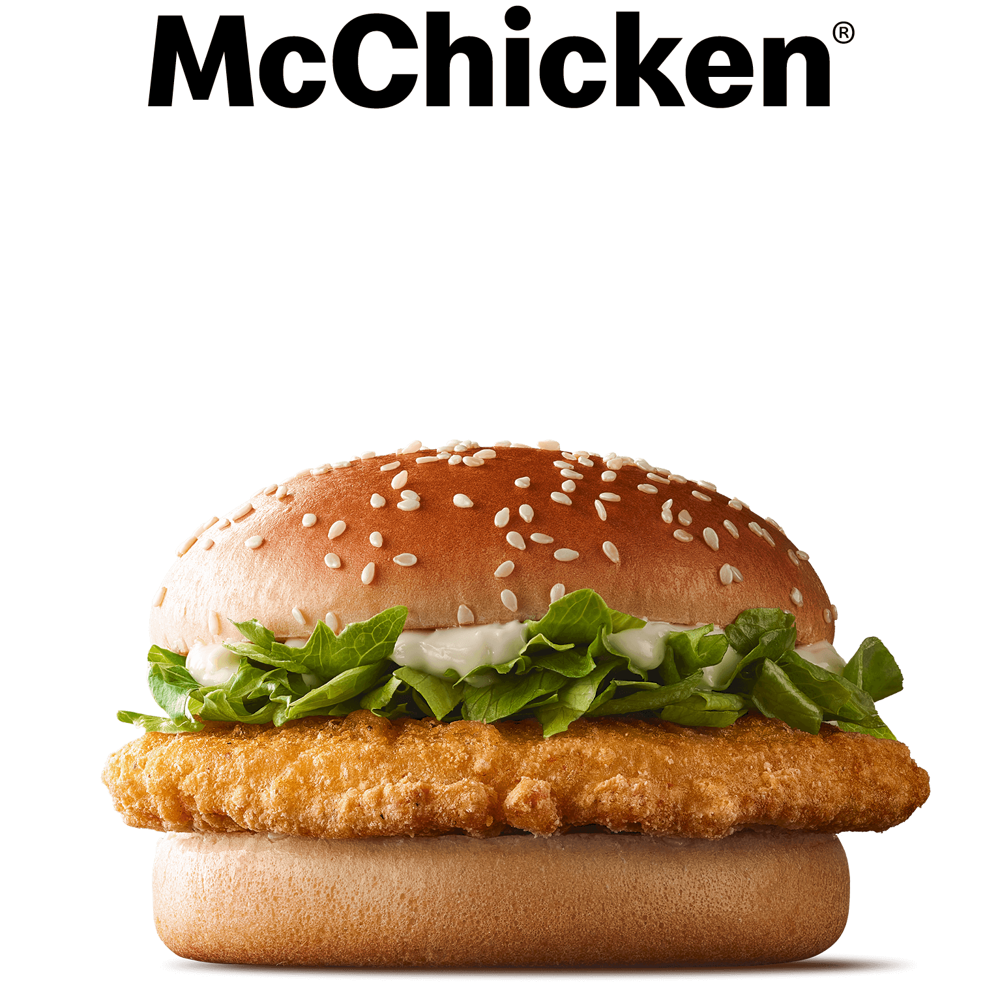

THE MCCHICKEN
The McChicken is a popular and satisfying sandwich offered by McDonald's. It is a delightful combination of crispy and flavorful ingredients that are sure to please any chicken lover. This scrumptious creation features a tender and juicy chicken patty, breaded and fried to a golden perfection, nestled between two soft and toasted buns.
The star of the McChicken is undoubtedly the chicken patty itself. Made from quality white meat, it is seasoned with a blend of herbs and spices, giving it a savory and flavorful taste. The crispy breading adds a satisfying crunch with every bite, creating a delightful contrast of textures.
Ingredients:
- Breaded chicken patty
- Mayonnaise-based sauce
- Lettuce
- Sesame seed bun
Steps:
- Gather all the ingredients.
- Preheat a skillet or deep fryer to medium-high heat.
- Cook the breaded chicken patty according to the package instructions.
- While the chicken patty is cooking, prepare the mayonnaise sauce by mixing it with a pinch of salt and pepper in a small bowl.
- Slice the sesame seed bun in half horizontally and lightly toast it on a grill or in a toaster.
- Once the chicken patty is cooked, remove it from the heat and let it rest for a minute.
- Assemble the sandwich: On the bottom bun, spread a generous amount of the mayonnaise sauce. Layer some fresh lettuce leaves on top of the sauce.
- Place the cooked chicken patty on the lettuce.
- Finally, spread another layer of the mayonnaise sauce on the top bun and place it on top of the assembled ingredients.
- Press the sandwich gently to bring all the flavors together.
Your homemade McChicken-inspired sandwich is now ready to be enjoyed! Serve it with some crispy French fries or a side salad for a complete meal.